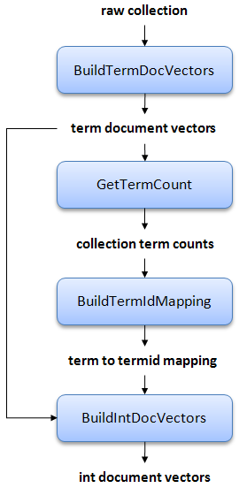

Prior to indexing a text collection, we must go through several preprocessing steps. First, each document must be assigned a sequentially-numbered integer, from 1 to n, where n is the size of the collection. We refer to this as the docno (in Ivory, always a four-byte int), while the original collection-specific document identifier is referred to as the docid, which is typically an alphanumeric identifier (in Ivory, always a String).
Numbering the documents is handled by classes in the edu.umd.cloud9.collection.* packages in Cloud9 (a separate package for each common collection). See documentation there for more details. The docid to docno mapping data is usually stored in a file named docno-mapping.dat in the index directory.
As a side note, this is slightly confusing since some collections (e.g., TREC) use the XML tag <DOCNO> to denote the docid. However, Ivory documentation is consistent about its reference to docnos and docids.
Once the docid to docno mapping has been created, we can proceed with the Ivory processing pipeline, which is shown below:

Here's a description of each step in detail:
- Build term document vectors. All documents are parsed into document vectors (with stemming and stopword removal), represented as associative arrays from terms to term frequencies (tfs) and positional information. We call these term document vectors. At the same time we build a table of document lengths, necessary for retrieval later.
- Extract document frequency and collection frequency data. Document frequencies (dfs) and collection frequencies (cf) are extracted from the postings. This stage allows user-specified thresholds for dropping terms from the collection based on an upper df limit and a lower df limit. An upper limit drops common terms, reducing the size of the index. A lower limit drops rare terms, reducing the vocabulary size. The dictionary and associated statistics are used in the next stage and for other purposes as well.
- Map terms to term ids. A mapping from terms to integers term ids is constructed. The terms are sorted by ascending document frequency, i.e., term 1 is the term with the highest df (after any user-specified filtering), term 2 is the term with the second highest df, etc. This stage generates a number of data files that facilitates mapping between term and term ids. The resulting dictionary is compressed with front-coding.
- Build integer document vectors. Finally, a new set of document vectors are generated in which terms are replaced with the integer term ids. We call these int document vectors, contrasted with term document vectors from the first stage. Furthermore, within each document vector the terms are sorted in increasing term id, so that we are able to efficiently encode gap differences.
After the collection has been preprocessed, we can proceed to index it. The inverted index is built from the int document vectors. The IP indexing algorithm is described in our TREC 2009 paper.
One frequently asked question is: why not index the collection directly? Why go through the extra steps of materializing the document vectors (both term and int variants)? The reason is to support relevance feedback. Relevance feedback requires access to document contents, so the two options are to reparse the documents on-the-fly, or to store the document vectors for easy access. Storing document vectors with the actual vocabulary is inefficient, so this is why we create int document vectors. Only int document vectors are used in the retrieval process, so term document vectors can be deleted once the int variants are generated; however, term document vectors may be useful for independent reasons.